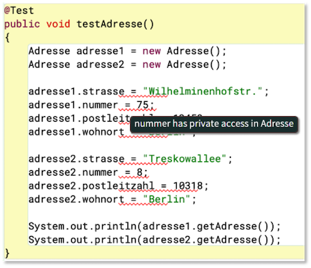
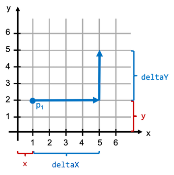

Klassen und Objekte¶
Wir haben bereits grob die Begriffe Klassen und Objekte kennengelernt. Nun wollen wir das Verständnis dafür vertiefen. Dazu erstellen wir uns unsere erste "richtige" eigene Klasse.
Ein erster eigener Datentyp Adresse¶
Wir erstellen uns ein neues BlueJ-Projekt und nennen es adresse. Darin erstellen wir eine neue Klasse Adresse. Wir löschen alles aus dieser Klasse, so dass nur
1 2 3 4 | |
übrig bleibt. Von dieser Klasse erzeugen wir uns eine Testklasse - BlueJ nennt sie AdresseTest. Ein Doppelklick auf das grüne Rechteck der Testklasse öffnet den Editor und zeigt
1 2 3 4 5 6 7 8 9 10 11 12 13 14 15 16 17 18 19 20 21 22 23 24 25 26 27 28 29 30 31 32 33 34 35 36 37 38 39 40 41 42 43 | |
In diese Testklasse fügen wir eine Methode testAdresse() wie folgt hinzu:
1 2 3 4 5 6 7 8 9 10 11 12 13 14 15 16 17 18 19 20 21 22 23 24 25 26 27 28 29 30 31 32 33 34 35 36 37 38 39 40 41 42 43 44 45 46 | |
Wir wollen uns zunächst um diese Testklasse nicht weiter kümmern und ignorieren auch zunächst den gesamten Rest. Um Platz zu sparen, zeigen wir von nun an immer nur noch die testAdresse()-Methode. In dieser Methode sehen wir aber bereits die Deklaration einer Variablen adresse1 vom Typ Adresse. Das bedeutet, dass unser neuer Datentyp Adresse bereits zur Verfügung steht und wir ihn verwenden können. Wir haben unseren ersten eigenen Datentyp erstellt!
Eigenschaften definieren¶
Unser Datentyp Adresse hat noch keine Eigenschaften. Als erstes definieren wir uns Objektvariablen für unsere Klasse:
1 2 3 4 5 6 7 8 9 | |
Die Struktur aller Objekte unserer Klasse sieht also wie folgt aus. Jedes Objekt vom Typ Adresse hat
- eine eigene Variable
strasse(vom TypString), - eine eigene Variable
nummer(vom Typint), - eine eigene Variable
postleitzahl(vom Typint), - eine eigene Variable
wohnort(vom TypString).
Objektvariablen sind global!¶
Bis jetzt hatten wir unsere Variablen immer lokal in einer Methode deklariert. Diese Variablen waren nur in der Methode sichtbar und existierten auch nur in der Methode, in der sie deklariert wurden. Siehe dazu Sichtbarkeit und Lebensdauer von lokalen Variablen.
Objektvariablen sind in der Klasse deklariert, nicht in einer Methode - sie sind global. Objektvariablen sind deshalb in der gesamten Klasse sichtbar, d.h. es kann in der gesamten Klasse daruf zugegriffen werden (in jeder Methode der Klasse). Objektvariablen existieren für ein konkretes Objekt. Jedes Objekt hat seine eigenen Objektvariablen. Diese existieren für das Objekt also so lange, solange das Objekt existiert.
Objektvariablen sind global und sind in allen Methoden der Klasse sichtbar, d.h. es kann in allen Methoden der Klasse auf die Objektvariablen zugegriffen werden.
Objektmethode hinzufügen¶
Jetzt wollen wir auch noch ein Verhalten implementieren und definieren uns dazu eine Objektmethode:
1 2 3 4 5 6 7 8 9 10 11 12 13 14 | |
Objekte erzeugen - der Konstruktor¶
Wir haben jetzt einen "Bauplan" für alle Objekte vom Datentyp Adresse erzeugt. Nun wollen wir nach diesem Bauplan Objekte von der Klasse (vom Datentyp) Adresse erzeugen. Das geschieht mithilfe des Konstruktors.
der Konstruktor einer Klasse heißt genau wie die Klasse selbst, ist aber eine Methode (z.B.
Adresse())
Um ein Objekt der Klasse zu erzeugen, verwenden wir das Schlüsselwort new und rufen dann den Konstruktor der Klasse auf:
new Klassenname();
Wir erzeugen in der testAdresse()-Methode der Testklasse zwei Objekte der Klasse Adresse:
21 22 23 24 25 26 | |
Das generelle Vorgehen bei der Erzeugung eines Objektes zeigt die folgende Abbildung:

Wir haben nun zwei Objekte vom Typ Adresse erstellt. Die Referenzvariable adresse1 zeigt auf das erste Objekt (Sie können auch sagen, dass adresse1 der Name des ersten Objektes ist) und die Referenzvariable adresse2 zeigt auf das zweite Objekt. Jedes dieser beiden Objekte hat seine eigenen Objektvariablen strasse, nummer, postleitzahl und wohnort und seine eigene Objektmethode getAdresse(). Wir werden jetzt auf diese Eigenschaften zugreifen.
Zugriff auf Objekteigenschaften - Punktnotation¶
Auf die Eigenschaften eines Objektes können wir über die Referenzvariable mittels Punktnotation zugreifen. Die Syntax ist also wie folgt:
referenzVariable.eigenschaft
Wir verwenden die Punktnotation für unsere Objekte vom Typ Adresse, um ihnen Werte für die Objektvariablen zuzuweisen und jeweils auf die Objektmethode zuzugreifen:
21 22 23 24 25 26 27 28 29 30 31 32 33 34 35 36 37 38 39 | |
Wir weisen also den jeweiligen Objektvariablen der beiden Objekte Werte zu und geben diese jeweils mithilfe der getAdresse()-Methode aus. Es ist ganz wichtig, zu verstehen, dass jedes Objekt seine eigenen Objektvariablen und seine eigenen Objektmethoden hat. Zugriff auf diese Variablen und Methoden gibt es stets nur über ein Objekt!
Die Ausgabe für obiges Beispiel sieht so aus:
Wilhelminenhofstr. 75 in 12459 Berlin
Treskowallee 8 in 10318 Berlin
Alle Objekte werden also nach dem gleichen "Bauplan" erstellt. Alle Objekte vom Typ Adresse haben die Eigenschaften:
strasse,nummer,postleitzahl,wohnortundgetAdresse()
Wenn wir die Klasse Adresse ändern, dann ändern sich auch die Eigenschaften entsprechend für alle Objekte dieser Klasse.
Datenkapselung (Information Hiding) - das Schlüsselwort private¶
Ein wesentlicher Grundsatz der objektorientierten Programmierung ist das Prinzip der Datenkapselung (auch data hiding oder information hiding genannt). Dieses Prinzip dient dem Datenschutz. Wir wollen vermeiden, dass
- Unbefugte die Struktur (die Daten) unserer Objekte kennen und
- Unbefugte die Daten ändern können, ohne dass wir es erlauben.
Angenommen, Sie haben eine Klasse Konto und es wäre möglich, ganz einfach auf ihre pin zuzugreifen. Das wäre fatal. Bereits der lesende Zugriff darauf könnte schädlich sein, aber genau so ärgerlich wäre es, wenn die pin einfach durch Fremde geändert werden könnte. Wir wollen deshalb sowohl den lesenden als auch den schreibenden Zugriff auf unsere Daten (auf unsere Objektvariablen) verbieten. Dazu deklarieren wir unsere Objektvariablen als private:
1 2 3 4 5 6 7 8 9 10 11 12 13 14 | |
Wir haben die Sichtbarkeit der Objektvariablen in unserer Klasse geändert. Vorher waren die Objektvariablen als public deklariert. Das führte dazu, dass sie von allen anderen Klassen gelesen und geschrieben werden konnten (z.B. von unserer Testklasse AdresseTest). Indem wir die Variablen als private deklarieren, ist der Zugriff darauf außerhalb unserer Klasse nicht mehr möglich.
Wenn wir uns jetzt unsere Testklasse AdresseTest anschauen, dann sehen wir Fehler:

Die Testklasse lässt sich nun nicht mehr compilieren und ausführen. Auch lesende Zugriffe, z.B. System.out.println(adresse1.wohnort); sind nicht mehr möglich. Beachten Sie aber, dass wir weiterhin die Methode getAdresse() aufrufen können. Sie ist als public deklariert und deshalb in anderen Klassen durch Adresse-Objekte ausführbar. Wir könnten auch die Methode als private deklarieren, dann würde auch sie nicht mehr ausführbar in anderen Klassen sein.
Auf eine als
privatedeklarierte Variable kann außerhalb der Klasse, in der sie deklariert ist, nicht zugegriffen werden.Eine als
privatedeklarierte Methode kann außerhalb der Klasse, in der sie definiert ist, nicht ausgeführt (aufgerufen) werden.
Wie können wir unseren Objektvariablen aber nun Werte zuweisen? Dafür gibt es zwei Antworten
- durch einen parametrisierten Konstruktor und
- durch sogenannte Getter
Wir betrachten zunächst den parametrisierten Konstruktor.
Ein eigener Konstruktor¶
Wir haben einen Konstruktor bereits kennengelernt. Ein Konstruktor ist eine Methode, die genau wie die Klasse heißt (also auch großgeschrieben) und mit runden Klammern. Wir haben den Konstruktor auch bereits verwendet, nämlich zur Erzeugung von Objekten (genau dafür ist er auch da). Betrachten wir nochmal die beiden Aufrufe:
Adresse adresse1 = new Adresse(); // Aufruf des Standardkonstruktors
Adresse adresse2 = new Adresse(); // Aufruf des Standardkonstruktors
Wir konnten die Objekte vom Typ Adresse mithilfe des Konstrutors Adresse() erzeugen. Dies ist ein sogenannter Standardkonstruktor, denn er existiert automatisch für jede neue Klasse (für jeden Datentyp), die wir erstellen. Jetzt wollen wir aber einen eigenen Konstruktor definieren, den wir in Zukunft zur Erzeugung unserer Adresse-Objekte verwenden wollen. In unserem neuen Konstruktor wollen wir nämlich bereits Werte als Parameter übergeben, die für die Initialisierung der Objektvariablen verwendet werden sollen. Wir erweitern unsere Klasse Adresse um einen solchen Konstruktor:
1 2 3 4 5 6 7 8 9 10 11 12 13 14 15 16 17 18 19 20 21 22 23 | |
In den Zeilen 10-16 haben wir einen solchen Konstruktor hinzugefügt. Wir übergeben dem Konstruktor vier Parameterwerte. Diese Werte werden verwendet, um unsere Objektvariablen zu initialisieren. Der Konstruktor wird aufgerufen, um ein neues Objekt zu erzeugen. Wir verwenden ihn hinter dem Schlüsselwort new.
Bei der Definition eines solchen Konstruktors sind zwei Dinge zu beachten:
- Der Konstruktor heißt exakt wie die Klasse (also auch Großschreibung beachten).
- Der Konstruktor hat keinen Rückgabetyp (auch nicht
void).
Die Aufgabe eines Konstruktors ist einzig und allein Objekte der Klasse zu erzeugen. Die "Rückgabe" eines solchen Konstruktors ist also ein Objekt der Klasse. Theoretisch wäre der Rückhgabetyp hier also Adresse. Aber wie gesagt, bei der Definition eines Konstruktors gibt man keinen Rückgabetyp an!
Wenn wir uns nun erneut die Testklasse AdresseTest anschauen, dann sind durch die Definition eines eigenen Konstruktors weitere Fehler hinzugekommen:

Dadurch, dass wir einen eigenen Konstruktor geschrieben haben, existiert der Standardkonstruktor Adresse() nicht mehr. Wir müssen (und wollen ja auch) nun unseren eigenen Konstruktor verwenden, um Objekte zu erzeugen. Wir passen die Testklasse AdresseTest entsprechend an:
1 2 3 4 5 6 7 8 9 | |
In den Zeilen 4 und 5 verwenden wir nun den eigenen Konstruktor und übergeben die Werte für die Objektvariablen als Parameter. Bei der Erzeugung der Objekte werden die Objektvariablen nun gleich initialisiert. Der direkte Zugriff auf die Objektvariablen wurde entfernt, da dieser aufgrund der private-Deklaration nicht mehr möglich ist. Die Ausgaben in Zeilen 7 und 8 zeigen aber, dass die Objekte die entsprechenden Werte enthalten:
Wilhelminenhofstr. 75 in 12459 Berlin
Treskowallee 8 in 10318 Berlin
Die Objekte erhalten somit gleich bei der Erzeugung alle Werte für die Objektvariablen und es ist nun auch nicht mehr möglich, diese Werte zu ändern. Ein direkter Zugriff auf die Objektvariablen ist nicht möglich. Die einzigen Wertzuweisungen finden im Konstruktor statt. Objekte, deren Werte nicht mehr geändert werden können, heißen immutable objects (unveränderliche Objekte). Sehr häufig ist es wünschenswert, dass Objekte immutable sind - das vermeidet Fehler. Wir kommen (sehr viel später) nochmal darauf zu sprechen.
Die einzige Schnittstelle (also die Möglichkeiten anderer Klassen unseren neuen Datentyp Adresse zu nutzen) unserer Klasse besteht nun aus zwei Methoden: dem Konstruktor zum Erzeugen eines Objektes und der Methode getAdresse(). Wenn wir aber z.B. nur den wohnort wissen wollen, dann ist es derzeit noch nicht möglich. Wir wollen deshalb den lesenden Zugriff auf unsere Objektvariablen erlauben und definieren uns dafür sogenannte Getter.
getXXX()-Methoden - Getter¶
Da die Objektvariablen alle als private deklariert sind, ist außerhalb der Klasse Adresse kein Zugriff auf diese Variablen möglich. Wir können ihnen weder Werte zuweisen, noch deren Werte auslesen. Wir haben bereits gesagt, dass dies ein Feature der objektorientierten Programmierung ist, ein solches information hiding einfach durchführen zu können.
Wir können jetzt steuern, ob und wie der Zugriff doch möglich sein soll. Wenn man bspw. den lesenden Zugriff erlauben möchte, dann definiert man sich innerhalb der Klasse sogenannte get-Methoden (Getter). Eine solche get-methode gibt den Wert einer Objektvariablen zurück. Es wird somit ein lesender Zugriff auf den Wert der Variablen ermöglicht. Für unsere Klasse schreiben wir uns nun für jede Objektvariable einen eigenen Getter:
getWohnort()gibt den Wert vonwohnortzurück, ist also vom RückgabetypStringgetPostleitzahl()gibt den Wert vonpostleitzahlzurück, ist also vom RückgabetypintgetStrasse()gibt den Wert vonstrassezurück, ist also vom RückgabetypStringgetNummer()gibt den Wert vonnummerzurück, ist also vom Rückgabetypint
Unsere Klasse Adresse sieht nun wie folgt aus:
1 2 3 4 5 6 7 8 9 10 11 12 13 14 15 16 17 18 19 20 21 22 23 24 25 26 27 28 29 30 31 32 33 34 35 36 37 38 39 40 41 42 43 | |
Unsere Schnittstelle hat sich also erweitert. Es sind jetzt auch mehr Methoden unserer Klasse Adresse nutzbar. Wir probieren die Methoden in unserer Testklasse AdresseTest aus:
1 2 3 4 5 6 7 8 9 10 11 12 13 14 15 | |
Beachten Sie, dass der Aufruf unserer get-Methoden auch wieder nur für konkrete Objekte erfolgen kann, hier also für adresse1 und adresse2. Wir greifen also wieder mittels Punktnotation auf diese Methoden zu. Wir sehen, dass wir nun mithilfe der Getter lesenden Zugriff auf die Objektvariablen haben - in der Testklasse AdresseTest können also die einzelnen Werte der Objektvariablen der jeweiligen Adresse-Objekte ausgelesen werden.
Success
Wir haben unseren ersten eigenen Datentyp erstellt! Wir haben dazu eine Klasse geschrieben. Die Klasse enthält Objektvariablen und Objektmethoden. Wir haben mithilfe des Schlüsselwortes new und dem Aufruf eines Konstruktors Objekte dieser Klasse erzeugt. Über die Punktnotation können wir auf die Objektmethoden zugreifen und diese ausführen. Wir haben außerdem das Schlüsselwort private kennengelernt. Auf Objektvariablen und Objektmethoden, die als private deklariert sind, kann außerhalb der Klasse nicht zugegriffen werden. Um doch einen lesenden Zugriff auf die Werte der Objektvariablen zu ermöglichen, haben wir Getter definiert.
Wir wollen jetzt das Neuerlernte an weiteren Beispielen festigen.
Eine weiterer Datentyp Point¶
Angenommen, wir wollen in einem kartesischen Koordinatensystem einen Punkt beschreiben, also soetwas wie in der folgenden Abbildung:

Um uns eine eigene Klasse für Point zu schreiben, überlegen wir uns zunächst, was die allgemeine Struktur eines solchen Punktes ist. Das ist recht leicht aus der oberen Abbildung zu erkennen: ein Punkt wird durch zwei int-Werte x und y beschrieben. Dieses werden also unsere Objektvariablen:
1 2 3 4 5 6 | |
Wir setzen die Objektvariablen nun gleich auf private. Wenn keine zwingenden Gründe dagegen sprechen (und das ist fast nie der Fall), deklarieren wir unsere Objektvariablen stets als private, um dem Prinzip des information hiding zu entsprechen. Hier nochmal eine Übersicht der bisherigen Begriffe und Bedeutungen:

Wir erstellen uns auch gleich einen parametrisierten Konstruktor, um den Objektvariablen bereits beim Erzeugen der Objekte ihre Werte zuzuweisen:
1 2 3 4 5 6 7 8 9 10 11 12 13 | |
Wie wir bereits wissen, heißt der Konstruktor exakt wie die Klasse und hat keinen Rückgabetyp (auch nicht void). Achten Sie darauf, dass die Parameter (derzeit noch) anders heißen, als die Objektvariablen. Wir haben ansonsten innerhalb des Konstruktors einen Namenskonflikt. Diesen werden wir auflösen, wenn wir das Schlüsselwort this kennenlernen.
In unserer Testklasse (Testklasse PointTest erzeugen und Testmethode testPoint() anlegen) können wir uns nun einige Point-Objekte erzeugen:
1 2 3 4 5 6 7 8 | |
Wir erstellen uns also vier Point-Objekte. Die Variablen p1, p2, p3 und p4 referenzieren jeweils ein Point-Objekt und sind vom Typ Point. Wir können uns die vier Objekte wie folgt veranschaulichen:

Jedes Point-Objekt hat also seine eigenen Objektvariablen mit den dazugehörigen Werten.
Getter und eine print()-Methode für Point¶
Wir wollen jetzt, dass außerhalb der Klasse die Werte von x und y ausgelesen werden können. Dazu definieren wir uns Getter, also eine getX()- und eine getY()-Methode. Außerdem wollen wir eine print()-Methode zur Klasse Point hinzufügen, um die Werte von x und y auf die Konsole auszugeben. Die Klasse Point sieht nun so aus:
1 2 3 4 5 6 7 8 9 10 11 12 13 14 15 16 17 18 19 20 21 22 23 24 25 26 27 28 29 30 | |
Wir testen die neuerstellten Objektmethoden in unserer Testklasse PointTest:
1 2 3 4 5 6 7 8 9 10 11 12 13 14 15 16 17 18 | |
Wir greifen also wieder über die jeweilige Referenzvariable p1, p2, p3 bzw. p4 über Punktnotation auf die Objektmethoden zu. Beachten Sie, dass - genau wie für die Objektvariablen - auch bei den Objektmethoden jedes Objekt "seine eigene" Objektmethode hat. p1.getX() gibt also genau den x-Wert des Objektes aus, auf das p1 zeigt (1) und p2.getX() gibt also genau den x-Wert des Objektes aus, auf das p2 zeigt (2). Die print()-Methode gibt genau die x- und y-Werte des Objektes aus, das die print()-Methode aufgerufen hat. Unsere vier Objekte können wir uns nun also so veranschaulichen:

Die Ausgabe sieht so aus:
p1 : ( 1, 2 )
p2 : ( 2, 4 )
p3 : ( 4, 6 )
p4 : ( 5, 3 )
[ x=1, y=2 ]
[ x=2, y=4 ]
[ x=4, y=6 ]
[ x=5, y=3 ]
Wir erstellen eine weitere Objektmethode für die Klasse Point, um einen Punkt zu verschieben.
Objektmethode translate() für Point¶
Wir wollen einen Punkt um ein deltaX nach links oder rechts und um ein deltaY nach oben oder unten verschieben:

Angenommen, unser Punkt ist, wie in der obigen Abbildung gezeigt, bei x=1 und y=2 und er soll um deltaX=4 nach rechts und um deltaY=3 nach oben verschoben werden, dann ist er nach translate(4,3) bei x=5 und y=5. Wir implementieren die Objektmethode in der Klasse Point wie folgt:
public void translate(int deltaX, int deltaY)
{
x = x + deltaX;
y = y + deltaY;
}
Beachten Sie, dass der Rückgabetyp void ist. Das hatten wir bisher immer nur bei Methoden, in denen eine Ausgabe auf die Konsole erfolgte. Bei Objektmethoden wird dies nun häufig vorkommen. In der Methode translate() werden die Werte von den Objektvariablen x und y neu gesetzt. Sie ergeben sich hier aus den alten Werten von x und y und der Addition mit deltaX bzw. deltaY. Beachten Sie auch, dass die Werte von deltaX und deltaY negativ sein können. Dann wird der Punkt nach links bzw. nach unten verschoben. Im Ergebnis der Ausführung der Methode translate() haben die Objektvariablen des Objektes, das diese Methode aufgerufen hat, neue Werte. Wir testen das in unserer Testklasse PointTest:
1 2 3 4 5 6 7 8 9 10 11 12 13 14 15 | |
Vergleiche mit anderen Objekten gleichen Typs¶
Angenommen, ein Punkt möchte "wissen", ob er selbst weiter links positioniert ist, als ein anderer Punkt. Dann muss er seinen eigenen x-Wert mit dem x-Wert des anderen Punktes vergleichen. Wenn wir dafür eine Objektmethode schreiben wollen, dann müssen wir den anderen Punkt als Parameter übergeben. Das ist kein Problem:
public boolean isLeft(Point otherPoint)
{
return (x < otherPoint.x);
}
Wir übergeben der Objektmethode ein Objekt vom Typ Point. Wir wissen, dass jedes Point-Objekt folgende Eigenschaften hat:
x,y,getX(),getY(),print()undtranslate()
Auf diese Eigenschaften können wir natürlich auch innerhalb der Klasse über die Punktnotation zugreifen. Hierbei ist anzumerken, dass wir innerhalb der Klasse auch direkt auf die x- und y-variablen zugreifen können. Der Sichtbarkeitsmodifizierer private besagt nur, dass wir nicht außerhalb der Klasse auf die Objektvariablen zugreifen können. Innerhalb der Klasse ist der direkte Zugriff erlaubt! Wir hätten aber auch über die getX()-Methode den Wert von x von otherPoint auslesen können.
Wir erweitern um die Methoden isRight(), isAbove(), isBelow(). Die gesamte Klasse Point sieht dann so aus:
1 2 3 4 5 6 7 8 9 10 11 12 13 14 15 16 17 18 19 20 21 22 23 24 25 26 27 28 29 30 31 32 33 34 35 36 37 38 39 40 41 42 43 44 45 46 47 48 49 50 51 52 53 54 55 56 | |
Wir testen die Methoden in unserer Testklasse:
1 2 3 4 5 6 7 8 9 10 11 12 13 14 15 16 17 18 19 20 21 22 23 24 25 26 27 28 29 30 31 | |
Beachten Sie, dass es immer ein Objekt gibt, das die Methode aufruft und ein Objekt, das der Methode als Parameter übergeben wird. Beispielsweise ist bei p1.isLeft(p2) das Point-Objekt p1 das aufrufende Objekt und das Point-Objekt p2 das Objekt, das der Methode als Parameter"wert" übergeben wird. p1 vergleicht sich also selbst mit p2. Da der x-Wert von p1 5 ist und der x-Wert von p2 ist 2 ergibt p1.isLeft(p2) false. Der Aufruf p2.isLeft(p1) würde dann true ergeben.
Success
Wir haben einen weiteren Datentyp erstellt, nämlich Point. In diesem beispiel gibt es eine Methode translate(), in der die Werte der Objektvariablen x und y geändert werden. Objekte vom Typ Point sind somit nicht immutable (unveränderlich). Der Rückgabetyp solcher Objektmethoden, die die Werte von Objektvariablen ändern, ist typischerweise void. Wir haben außerdem Objektmethoden definiert, in denen sich das aufrufende Objekt mit einem anderen Objekt gleichen Typs vergleicht. Der Vergleich erfolgt über die Werte der Objektvariablen sowohl des aufrufenden Objektes, als auch der Werte der Objektvariablen des Objektes, mit dem verglichen wird (das als Parameter übergeben wird).
Wir festigen unserer neuen Erkenntnisse an noch einem weiteren Beispiel:
Ein weiterer Datentyp Circle¶
Wir erstellen uns einen Datentyp, der einen Kreis repräsentiert. Wir nennen den Datentyp Circle. Ein Kreis ist durch seinen radius eindeutig beschrieben. Wir könnten als Objektvariable auch den Durchmesser diameter wählen, das bleibt sich gleich und ist eine eigene Programmierentscheidung. Wir sollten aber keinesfalls radius und diameter als Objekteigenschaften wählen, da es ansonsten zu Inkonsistenten kommen könnte - angenommen, radius hätte den Wert 5 und diameter den Wert 11, das wäre inkonsistent und würde nicht passen. Vielmehr kann der Durchmesser aus dem Radius berechnet werden. Wir implementieren also:
1 2 3 4 5 6 7 8 9 10 11 12 13 14 15 16 17 18 19 20 21 22 23 24 25 26 27 28 29 | |
Die Objektvariable radius ist wieder als private deklariert - es gibt keinen Grund, dies nicht zu tun. Wir erlauben aber den lesenden Zugriff darauf durch die Erstellung der getRadius()-Methode, die public ist. Außerdem berechnen wir auch noch den Durchmesser und geben ihn mit der getDiameter()-Methode zurück. Beachten Sie, dass sowohl radius als auch getDiameter() vom Typ double sind. Damit wir die Werte auch ausgeben, haben wir eine print()-Methode erstellt. Beachten Sie, dass wir in der print()-Methode die Objektmethode getDiameter() aufrufen.
Wir testen den Datentyp Circle in einer Testklasse CircleTest:
1 2 3 4 5 6 7 8 9 10 | |
Es werden folgende Ausgaben erzeugt:
Radius : 5.0
Durchmesser : 10.0
Radius : 3.5
Durchmesser : 7.0
Für einen Kreis können wir auch noch den Umfang circumference() und den Flächeninhalt area() berechnen und verwenden dazu die Konstante PI aus der Math-Klasse (siehe Die Klasse Math). Mit den Ergebnissen der circumference()- und der area()-Methode erweitern wir auch die Ausgabe in print():
1 2 3 4 5 6 7 8 9 10 11 12 13 14 15 16 17 18 19 20 21 22 23 24 25 26 27 28 29 30 31 32 33 34 35 36 37 38 39 40 41 | |
Das erneute Ausführen der Testklasse (in der Testklasse nichts geändert, aber die print()-Methode wurde geändert) ergibt:
Radius : 5.0
Durchmesser : 10.0
Umfang : 31.41592653589793
Flaecheninhalt : 78.53981633974483
Radius : 3.5
Durchmesser : 7.0
Umfang : 21.991148575128552
Flaecheninhalt : 38.48451000647496
Zur Wiederholung und Festigung wollen wir auch hier zwei Circle-Objekte miteinander vergleichen. Auch hier gibt es immer ein aufrufendes Circle-Objekt und ein Circle-Objekt, das als Parameter übergeben wird. Wir schreiben drei Methoden, die jeweils ein boolean zurückgeben: isSmaller(), isBigger(), isEqual():
1 2 3 4 5 6 7 8 9 10 11 12 13 14 15 16 17 18 19 20 21 22 23 24 25 26 27 28 29 30 31 32 33 34 35 36 37 38 39 40 41 42 43 44 45 46 47 48 49 50 51 52 53 54 55 56 | |
In der isEqual()-Methode hätten wir natürlich auch return radius==c.radius; schreiben können. Aber wir wollten hier nochmal die Verwendung von Objektmethoden innerhalb der Klasse zeigen. Die Testklasse CircleTest
1 2 3 4 5 6 7 8 9 10 | |
erzeugt folgende Ausgaben (nur die Vergleiche):
bash
c1 groesser als c2 ? true
c1 kleiner als c2 ? false
c1 gleich c2 ? false
c2 groesser als c1 ? false
c2 kleiner als c1 ? true
c2 gleich c1 ? false
c1 groesser als c1 ? false
c1 kleiner als c1 ? false
c1 gleich c1 ? true
Beachten Sie, dass im dritten Vergleichsblock das c1-Objekt mit sich selbst verglichen wird. Auch das ist ohne Probleme möglich (aber normalerweise sinnlos).
Success
Wir haben in diesem dritten Beispiel die ersten Erkenntnisse über das objektorientierte Programmieren wiederholt und gefestigt. In der Klasse Circle haben wir insbesondere häufiger die Objektmethoden innerhalb der Klasse aufgerufen. Die Einführung in die objektorientierte Programmierung ist hiermit zunächst beendet. Beim nächsten Mal werden wir mehrere Konstruktoren in der Klasse definieren, wir werden eigene Datentypen in neuen Datentypen verwenden und das Schlüsselwort this kennenlernen. Viel Spaß beim Üben!
Die Klassen Adresse, Point,CircleundTestklasse`
1 2 3 4 5 6 7 8 9 10 11 12 13 14 15 16 17 18 19 20 21 22 23 24 25 26 27 28 29 30 31 32 33 34 35 36 37 38 39 40 41 42 43 | |
1 2 3 4 5 6 7 8 9 10 11 12 13 14 15 16 17 18 19 20 21 22 23 24 25 26 27 28 29 30 31 32 33 34 35 36 37 38 39 40 41 42 43 44 45 46 47 48 49 50 51 52 53 54 55 56 | |
1 2 3 4 5 6 7 8 9 10 11 12 13 14 15 16 17 18 19 20 21 22 23 24 25 26 27 28 29 30 31 32 33 34 35 36 37 38 39 40 41 42 43 44 45 46 47 48 49 50 51 52 53 54 55 56 57 | |
1 2 3 4 5 6 7 8 9 10 11 12 13 14 15 16 17 18 19 20 21 22 23 24 25 26 27 28 29 30 31 32 33 34 35 36 37 38 39 40 41 42 43 44 45 46 47 48 49 50 51 52 53 54 55 56 57 58 59 60 61 62 63 64 65 66 67 68 69 70 71 72 73 74 75 76 77 78 79 80 81 | |
Klassen und Objekte II¶
Wir machen weiter mit eigenen Datentypen und erstellen uns Objekte, die von diesen Typen sind. Wir werden im Folgenden
- eigene Datentypen in neuen Datentypen verwenden,
- mehrere Konstruktoren in der Klasse definieren,
- in Methoden Objekte erzeugen und diese auch zurückgeben und
- das Schlüsselwort
thiskennenlernen.
Eigene Datentypen in eigenen Datentypen verwenden¶
Wir beginnen damit, eigene Datentypen in neuen Datentypen zu verwenden, da dies eine gute Wiederholung ist. Angenommen, wir haben unsere Klasse Adresse in einem BlueJ-Projekt erstellt. In diesem Projekt erstellen wir uns eine neue Klasse Person mit folgenden Objektvariablen:
namevom TypString,vornamevom TypStringundadressevom TypAdresse.
Wir fügen auch gleich noch den Konstruktor hinzu und bereiten die print()-Methode vor:
1 2 3 4 5 6 7 8 9 10 11 12 13 14 15 16 17 18 19 20 21 22 | |
- In Zeile
6verwenden wir die von uns geschriebene KlasseAdresse. - der Konstruktor (Zeilen
9-14) sieht aus, wie erwartet. Wir initialisieren alle Objektvariablen mit den als Parameter übergebenen Werten. - in den Zeilen
17-21haben wir auch schon dieprint()-Methode vorbereitet. Darin wollen wir alle Informationen über das jeweiligePerson-Objekt ausgeben. Fürnameundvornameist das sicherlich einfach. Aber wie kommen wir an die Informationen vonadresse?
Wir erstellen uns in einer Testklasse zunächst Objekte der Klasse Person.
Person-Objekte erzeugen¶
Um Objekte von Person erstellen zu können, benötigen wir Objekte des Typs Adresse, da diese dem Konstruktor als Parameter übergeben werden müssen. Beachten Sie auch hier, dass wir die Klasse Adresse dazu aus dem package themen.objekte importieren.
1 2 3 4 5 6 7 8 9 10 11 12 13 | |
Objektmethoden aufrufen¶
Zunächst erweitern wir unsere print()-Methode in Person:
20 21 22 23 24 25 | |
In der Testklasse rufen wir die print()-Methode für die beiden Person-Objekte auf:
8 9 10 11 12 13 14 15 16 17 18 | |
Die Ausgabe erfolgt wie gewünscht:
Maria Musterfrau
Max Mustermann
Wie können wir nun auch die Adressen von maria und max ausgeben? Die Antwort ist: mithilfe der Objektmethoden von Adresse. Schauen wir uns die Objektmethoden von Adresse nochmal an (siehe auch hier):
20 21 22 23 24 25 26 27 28 29 30 31 32 33 34 35 36 37 38 39 40 41 42 43 44 | |
Alle diese Methoden sind public und können von allen Klassen aufgerufen werden. Wir nutzen in der print()-Methode von Person die Objektmethode getAdresse() von Adresse, könnten aber auch alle anderen Objektmethoden verwenden.
20 21 22 23 24 25 | |
Erneutes Ausführen der Testklasse erzeugt nun folgende Ausgabe:
Maria Musterfrau wohnt in Wilhelminenhofstr. 75 in 12459 Berlin
Max Mustermann wohnt in Treskowallee 8 in 10318 Berlin
Die Objekteigenschaft adresse der Klasse Person ist vom Typ Adresse. Um ein Objekt der Klasse Person zu erzeugen, muss dem Konstruktor der Klasse Person ein Objekt der Klasse Adresse übergeben werden - das erwartet der Konstruktor als Parameter. Jedes Objekt vom Typ Person "besitzt" somit ein eigenes Objekt von Typ Adresse, welches in adresse gespeichert ist. Für dieses Objekt können alle Objekteigenschaften aus Adresse aufgerufen werden (z.B. auch getStrasse(), getNummer(), getPostleitzahl() und getWohnort()).
Getter für Person erzeugen¶
Wir erstellen uns für die Klasse Person getter (also getXXX()-Methoden) für die Objektvariablen:
1 2 3 4 5 6 7 8 9 10 11 12 13 14 15 16 17 18 19 20 21 22 23 24 25 26 27 28 29 30 31 32 33 34 35 36 37 | |
Die Implementierungen der Getter sind so, wie wir sie bereits kennen. Wir nennen die Methoden get und hängen jeweils in camel-case-Schreibweise den Namen der Objektvariablen an, also getName(), getVorname() und getAdrese(). Der Rückgabetyp der Methode entspricht stets dem Typ der Variablen, also für name und vorname ist der Rückgabetyp der Methoden getName() und getVorname() jeweils String und der Rückgabetyp von getAdresse() ist wie der Typ von adresse, nämlich Adresse.
Wir betrachten nun besonders die Methode getAdresse() der Klasse Person und rufen diese in der Testklasse auf.
1 2 3 4 5 6 7 8 9 10 11 12 13 14 15 16 17 | |
- In Zeile
12rufen wir die soeben erstelle MethodegetAdresse()für dasPerson-Objektmariaauf. Die Rückgabe dieser Objektmethode ist dieadressevonmaria, also ein Objekt vom TypAdresse, welches wir in der ReferenzvariablenmariasAdressevom TypAdressespeichern. - In Zeile
13passiert das gleiche mit demPerson-Obejktmax. In der VariablenmaxAdressevom TypAdresseist nun dasAdresse-Objekt vonmaxgespeichert. - für diese beiden
Adresse-Objekte können wir nun alle Objektmethoden ausAdresseaufrufen. In Zeile15wird z.B. diegetAdresse()-Methode des ObjektesmariasAdresseaufgerufen und in Zeile16diegetAdresse()-Methode desAdresse-ObjektesmaxAdresse.
Beachten Sie, dass es zwei Methoden mit dem gleichen Namen gibt! Es existiert eine getAdresse()-Methode für den Datentyp Adresse. Diese Methode kann von Objekten des Typs Adresse aufegrufen werden und gibt einen String zurück. Außerdem gibt es eine getAdresse()-Methode für den Datentyp Person. Diese kann von Objekten des Datentyps Person aufgerufen werden und gibt eine Adresse zurück.
Aneinanderreihung von Aufrufen von Objektmethoden¶
Wir hätten in der main()-Methode der Testklasse auch folgende Anweisungen ausführen können:
1 2 3 4 5 6 7 8 9 10 11 12 13 14 15 16 17 18 19 20 21 | |
Die Anweisung maria.getAdresse() gibt, wie gesagt, ein Adresse-Objekt zurück. Wir müssen dieses Objekt nicht zwingend zwischenspeichern (so, wie in Zeile 12), sondern können auch gleich für dieses Objekt eine Objektmethode aufrufen, nämlich z.B. die Methode getAdresse() des Typs Adresse, welche einen String zurückgibt, der durch println() ausgegeben wird. Das gleiche passiert in Zeile 20 mit dem Person-Objekt max, für das zunächst die getAdresse()-Methode aus Person aufgerufen wird, welche ein Adresse-Objekt zurückgibt und für diese Adresse-Objekt wird die Objektmethode getAdresse() des Typs Adresse aufgerufen.
Wir sehen bereits an diesem einfachen Beispiel, dass eine solche Hintereinanderreihung von Aufrufen von Objektmethoden leicht für Verwirrung Sorgen kann und schwer zu verstehen ist. Hier kommt noch gesondert hinzu, dass verschiedene Methoden gleich heißen. Eine solche Hintereinanderreihung von Objektmethoden sollten wir möglichst vermeiden. Wir könnten unserer Person-Klasse z.B. eine Methode getAdresseString() hinzufügen, die uns die Adresse als String zurückgibt:
1 2 3 4 5 6 7 8 9 10 11 12 13 14 15 16 17 18 19 20 21 22 23 24 25 26 27 28 29 30 31 32 33 34 35 36 37 38 39 40 41 42 | |
Dann könnten wir in der main()-Methode der Testklasse
21 22 23 24 25 26 27 | |
die neue Objektmethode aus Person aufrufen und bekämen die Adresse als String zurück.
Das Schlüsselwort this¶
Wir wissen jetzt schon, dass Objektmethoden immer nur von Objekten aufgerufen werden können. Wir können z.B. nicht einfach nur getAdresseString() aus der Klasse Person aufrufen, sondern benötigen ein Objekt der Klasse Person, welches die Objektmethode aufruft.
Objektmethoden können nur von einem Objekt aufgerufen werden!
In dem obigen Beispiel hatten wir z.B. die Objekte maria und max vom Typ Person, die beide jeweils (für sich) die Objektmethode getAdresseString() aufgerufen haben.
Wenn wir uns also den Aufruf einer Objektmethode anschauen, dann wissen wir auch immer:
Wenn eine Objektmethode aufgerufen wird, dann immer durch genau ein konkretes Objekt.
Innerhalb der Klasse Person wissen wir nicht, von welchem konkreten Objekt eine Objektmethode aufgerufen wird. Die Referenzvariablen max und maria sind z.B. innerhalb der Klasse Person nicht sichtbar (es sind lokale Variablen der main()-Methode von Testklasse). Wir wissen aber, dass es ein aufrufendes Objekt gibt (denn nur für ein konkretes Objekt kann eine Objektmethode aufgerufen werden). Dieses konkrete Objekt können wir innerhalb der Klasse referenzieren - das machen wir mit dem Schlüsselwort this. this steht also für das konkrete Objekt, das die Methode (gerade) aufruft.
thisist das aufrufende Objekt.
Schauen wir uns zur Wiederholung nochmal die Klasse Circle an. In der dazugehörigen Testklasse hatten wir zwei Objekte der Klasse Circle erstellt und diese Objekte haben Objektmethoden aufgerufen:
1 2 3 4 5 6 7 8 9 10 11 12 13 14 15 16 17 18 | |
In den Zeilen 6 und 7 werden die beiden Circle-Objekte erzeugt. In Zeile 9 ruft das c1-Objekt die print()-Methode auf und in Zeile 11 ruft das c2-Objekt die print()-Methode auf. Innerhalb der Klasse wäre dann this einmal das c1-Objekt (nämlich bei c1.print()) und ein anderes Mal ist this das c2-Objekt, nämlich bei c2.print(). Bei den Aufrufen c1.isBigger(c2), c1.isSmaller(c2) und c1.isEqual(c2) ist das aufrufende Objekt immer c1.
Wozu benötigen wir this überhaupt? Bis jetzt kamen wir ohne this aus. Aber schauen wir uns nur einmal den Konstruktor von Circle an:
1 2 3 4 5 6 7 8 9 10 11 | |
Im Konstruktor wird die Objektvariable radius mit dem Wert des Parameters pRadius initialisiert. Die Objektvariable radius ist global, d.h. wir haben in jeder Methode der Klasse Zugriff auf diese Variable. Objektvariablen werden innerhalb der Klasse (nicht innerhalb einer Methode) deklariert und sind deshalb in dem gesamten Anweisungsblock der Klasse, also in der gesamten Klasse sichtbar. Wir können in allen Methoden der Klasse auf die Objektvariablen zugreifen.
Der Parameter pRadius ist eine lokale Variable. Diese Variable wird in der Methode deklariert und ist auch nur dort sichtbar. Sie existiert auch nur, solange die Methode ausgeführt wird. Was passiert aber, wenn wir den Parameter genau wir die Objektvariable nennen?
1 2 3 4 5 6 7 8 9 10 11 | |
Wenn der Parameter genau so heißt, wie die Objektvariable, gibt es einen Namenskonflikt. Wir können in der Methode auf die Objektvariable zugreifen (sie ist ja global), es gibt aber auch eine lokale Variable mit dem gleichen Namen radius. Woher soll der Compiler (oder die Laufzeitumgebung) nun wissen, ob wir die Objektvariable radius meinen oder die lokale Variable radius?
Tatsächlich, stehen in der Anweisung radius = radius; in Zeile 9 beide radius für den Parameter, d.h. wir weisen dem Parameter radius dort den Wert des Parameters radius zu. Das ist erstens nicht gewollte und zweitens unsinnig. Die Objektvariable radius wird durch den Parameter radius überschattet - sogenanntes shadowing. Wenn wir in diesem Falle die Objektvariable radius meinen, dann müssen wir this.radius schreiben.
Mit
this.können wir innerhalb der Klasse auf alle Objekteigenschaften (Objektvariablen und Objektmethoden) zugreifen.
Die korrekte Implementierung des Konstruktors lautet also:
1 2 3 4 5 6 7 8 9 10 11 | |
Jetzt wird der Objektvariablen this.radius der Wert des Parameters radius zugewiesen.
Ab jetzt referenzieren wir alle Objekteigenschaften innerhalb der Klasse mit this! Wir passen zunächst die Implementierung von Circle an:
1 2 3 4 5 6 7 8 9 10 11 12 13 14 15 16 17 18 19 20 21 22 23 24 25 26 27 28 29 30 31 32 33 34 35 36 37 38 39 40 41 42 43 44 45 46 47 48 49 50 51 52 53 54 55 56 57 | |
Wir sehen, dass wir überall dort, wo wir auf Objekteigenschaften zugreifen, die Referenz this. davor gesetzt haben. das sollten wir von un ab in Zukunft auch immer so handhaben, da der Code dann leichter erweiterbar ist (wir müssen uns nicht darum kümmern, ob eine neue lokale Variable eventuell genau so heißt, wie eine Objektvariable) und er ist auch besser lesbar, denn wir können leichter zwischen Methoden anderer Klassen und eigenen unterscheiden.
Betrachten wir die Implementierung der Methode isSmaller() nochmal genauer:
public boolean isSmaller(Circle c)
{
return (this.radius < c.radius);
}
Angenommen, wir haben, wie oben in dem Beispiel, in der main()-Methode den Aufruf c1.isSmaller(c2). Dann ist c1 das aufrufende Objekt dieser Objektmethode und steht innerhalb der Klasse für das this. Das Objekt c2 wird als Parameter übergeben und steht in der Implementierung für das Objekt c der Klasse Circle. Innerhalb der Methode werden die Werte von radius vom aufrufenden Objekt this und vom Parameter c miteinander verglichen.
Wir passen auch unsere Klasse Person entsprechend an:
1 2 3 4 5 6 7 8 9 10 11 12 13 14 15 16 17 18 19 20 21 22 23 24 25 26 27 28 29 30 31 32 33 34 35 36 37 38 39 40 41 42 | |
Insbesondere innerhalb der Methode getAdresseString() erkennen wir gut, dass wir darin nicht auf die getAdresse()-Methode von Person zugreifen, sondern auf die getAdresse()-Methode von Adresse. Wir haben auch die Parameter des Konstruktors anegpasst, denn es ist völlig üblich, die Parameter so zu nennen, wie die Objektvariablen, die damit initialisiert werden sollen. Aber dann muss vor den Objektvariablen auch jeweils this. stehen!
Integrieren Sie auch in den Klassen Adresse und Point die this.-Referenz!
Mehrere Konstruktoren¶
Es kann vorkommen, dass wir gar nicht allen Objektvariablen einen Wert im Konstruktor übergeben wollen. Wenn wir für eine Objektvariable keinen Wert im Konstruktor übergeben, dann soll dieser Objektvariablen ein Standardwert zugewiesen werden. Ein einfaches Beispiel wäre, dass wir für unsere Klasse Circle einen Konstruktor haben, dem ein Wert für radius übergeben wird und einen Konstruktor, der parameterlos ist, dem also kein Wert für radius übergeben wird. In diesem Fall soll radius den Wert 1.0 annhmen, also der Einheitskreis sein.
Diese Anforderung erfüllen wir, indem wir zwei Konstruktoren definieren:
1 2 3 4 5 6 7 8 9 10 11 12 13 14 15 16 17 18 | |
Jetzt können Objekte von Circle sowohl unter Verwendung des parametrisierten Konstruktors, als auch unter Verwendung des parameterlosen Konstruktors erzeugt werden:
Circle c1 = new Circle(5.0);
Circle c2 = new Circle(3.5);
Circle c3 = new Circle(); // parameterloser Konstruktor - Einheitskreis
c1.print();
c2.print();
c3.print();
ergibt folgende Ausgabe:
Radius : 5.0
Durchmesser : 10.0
Umfang : 31.41592653589793
Flaecheninhalt : 78.53981633974483
Radius : 3.5
Durchmesser : 7.0
Umfang : 21.991148575128552
Flaecheninhalt : 38.48451000647496
Radius : 1.0
Durchmesser : 2.0
Umfang : 6.283185307179586
Flaecheninhalt : 3.141592653589793
Das Prinzip, das hierbei angewendet wird, nennt sich Überladen von Methoden.
Überladen von Methoden¶
Wir hatten dieses Prinzip auch bereits in Übung 4 angewendet, wo wir zwei print()-Methoden erstellt hatten. Die eine print()-Methode hat ein char[] als Parameter erwartet und die andere ein int[]. Das Überladen von Methoden erfolgt immer dann, wenn Methoden gleichen Namens existieren. Wichtig ist, dass sich diese Methoden in ihrer Parameterliste unterscheiden.
Was bedeutet, dass sich Parameterlisten von Methoden unterscheiden? Methoden haben eine unterschiedliche Parameterliste, wenn
- sich die Anzahl der Parameter unterscheidet oder wenn
- sich die Typen bzw. die Typreihenfolge der Parameter unterscheiden.
Angenommen, unsere Methode heißt method, dann haben folgende Methoden eine unterschiedliche Parmaterliste:
method(int number)// nur ein Parametermethod(int nr1, int nr2)// zwei Parameter int, intmethod(double nr1, double nr2)// zwei Parameter double, doublemethod(int nr1, double nr2)// zwei Parameter int, doublemethod(double nr1, int nr2)// zwei parameter double, int
Die Methode method wäre also in diesem Fall (wenn es jeweils noch passende Implementierungen dazu gibt), fünf Mal überladen. Dem Compiler muss beim Aufruf klar sein, welche der jeweiligen Methoden er aufrufen muss. Das ist durch unterschiedliche Parameterlisten gegeben. Folgende Beispiele zeigen dies:
method(3.0, 3);// ruft Methode 5. aufmethod(3, 3);// ruft Methode 2. aufmethod(3.0, 3.0);// ruft Methode 3. aufmethod(3);// ruft Methode 1. aufmethod(3, 3.0);// ruft Methode 4. auf
Die Namen der Parameter spielen keine Rolle. Beispielsweise wäre method(int number1, int number2) ein Dopplung zu Methode 2. Das programm ließe sich gar nicht übersetzen. Auch der Rückgabetyp wird nicht zur Unterscheidung der Methodensignatur hinzugezogen. Die beiden Methoden int method(int nr1, int nr2) und double method(int nr1, int nr2) wären ebenfalls eine Dopplung. Woher soll der Compiler beim Aufruf von z.B. method(3, 3); wissen, welche der beiden Methoden ausgeführt werden soll, die die ein int zurückgibt oder die, die ein double zurückgibt.
Zur Methodensignatur gehören der Name der Methode und die Parameterliste.
Für alle Methoden einer Klasse müssen sich deren Methodensignaturen unterscheiden, also entweder deren Namen oder deren Parameterlisten.
Mehrere Konstruktoren in Point¶
Für unsere Klasse Point wollen wir ebenfalls mehrere Konstruktoren definieren:
- Konstruktor mit zwei Paramtern (haben wir schon) →
xundywerden mit den Parameterwerten initialisiert - Konstruktor mit einem Parameter →
xundybekommen den gleichen Wert, den des Parameters - Konstruktor ohne Parameter →
xundybekommen jeweils den Wert0
public class Point
{
// --- Objektvariablen -----------
private int x;
private int y;
// --- Konstruktoren ---------------
public Point(int x, int y)
{
this.x = x;
this.y = y;
}
public Point(int value)
{
this.x = value;
this.y = value;
}
public Point()
{
this.x = 0;
this.y = 0;
}
/* restliche Methoden bleiben gleich - hier gekuerzt */
/* siehe oben. */
Mehrere Konstruktoren in Person¶
Der Konstruktor in Person sieht derzeit so aus:
public Person(String name, String vorname, Adresse adresse)
{
this.name = name;
this.vorname = vorname;
this.adresse = adresse;
}
Das heißt, wir erwarten ein Objekt vom Typ Adresse, um ein Objekt vom Typ Person erstellen zu können. Es könnte ja aber sein, dass ein solches Objekt (noch) gar nicht existiert und wir selbst ein solches Objekt innerhalb unserer Konstruktors erstellen müssen. Wir bräuchten dafür nur alle Informationen, um das Objekt erstellen zu können, also
- eine Strasse (
String), - eine Hausnummer (
int), - ein Wohnort (
String) und - eine Postleitzahl (
int).
Wir erstellen uns einen Konstruktor, der dafür Werte übergibt (und auch für name und vorname):
public Person(String name, String vorname, String strasse, int nummer, int postleitzahl, String wohnort)
{
this.name = name;
this.vorname = vorname;
this.adresse = new Adresse(strasse, nummer, postleitzahl, wohnort);
}
Es wird also kein existierendes Adresse-Objekt dem Konstruktor übergeben, sondern erst im Konstruktor eines erstellt. Die restliche Implementierung der Klasse Person ändert sich aber nicht, da sich ja auch für adresse nichts geändert hat - die Variable zeigt auf ein Adresse-Objekt.
Objekterzeugende Methoden¶
Genau die gleiche Lösung können wir verwenden, wenn eine Person umzieht, also ihre Adresse ändert. umzug() ist dabei auf jeden Fall eher eine Eigenschaft der Klasse Person, als der Klasse Adresse! Wir erweitern die Klasse Person um zwei umzug()-Methoden. Die eine erwartet ein (neues) Adresse-Objekt und die andere bekommt Werte für die Erstellung eines neuen Adresse-Objektes übergeben:
1 2 3 4 5 6 7 8 9 | |
Der Aufruf in der main()-Methode könnte dann so aussehen:
public void main()
{
Adresse adresse1 = new Adresse("Wilhelminenhofstr.", 75, 12459, "Berlin");
Adresse adresse2 = new Adresse("Treskowallee", 8, 10318, "Berlin");
Person maria = new Person("Musterfrau", "Maria", adresse1);
System.out.println(maria.getAdresseString());
maria.umzug(adresse2);
System.out.println(maria.getAdresseString());
maria.umzug("Rudower Chaussee", 25, 12489, "Berlin");
System.out.println(maria.getAdresseString());
}
mit folgender Ausgabe:
Wilhelminenhofstr. 75 in 12459 Berlin
Treskowallee 8 in 10318 Berlin
Rudower Chaussee 25 in 12489 Berlin
Objekterzeugende Methoden mit Objekt als Rückgabe¶
Wir betrachten zur Wiederholung erneut die Klasse Point. Wir erinnern uns: ein Point bestand aus einer x- und einer y-Koordinate. Wir hatten verschiedene Objektmethoden für Point erstellt - siehe hier.
Angenommen, wir wollen zwei Punkte addieren - z.B. ein Point p1 und ein Point p2. Die Idee dabei ist, dass die Summe der beiden x-Werte (p1.x + p2.x) einen neuen x-Wert und die Summe der beiden y-Werte (p1.y + p2.y) einen neuen y-Wert ergibt.
Wir starten einen ersten Versuch und implementieren eine add()-Methode wie folgt:
public void add(Point p)
{
this.x = this.x + p.x;
this.y = this.y + p.y;
}
Der Aufruf in einer Testklasse mit:
Point p1 = new Point(1, 2);
Point p2 = new Point(2, 4);
p1.print();
p1.add(p2);
p1.print();
führt zu folgender Ausgabe:
[ x=1, y=2 ]
[ x=3, y=6 ]
Das heißt, durch die Addition mit p2 hat sich das p1-Objekt geändert. Die Frage ist, ob das beabsichtigt ist und eine eindeutige Antwort ja oder nein kann hier nicht gegeben werden. Es ist nicht ganz klar, ob sich das aufrufende Objekt selbst verändern sollte, wenn es mit einem anderen Point addiert wird. Insbesondere macht es einen Unterschied, ob wir p1.add(p2) aufrufen oder p2.add(p1). Im ersten Fall ist nach der Addition p1 -> [ x=3, y=6 ] und p2 -> [ x=2, y=4 ]. Im zweiten Fall ist nach der Addition p1 -> [ x=1, y=2 ] und p2 -> [ x=3, y=6 ]. Wir erreichen also einen anderen Gesamtzustand des Systems.
Es spricht Vieles dafür, die Implementierung zu ändern und die beiden sich addierenden Punkte unverändert zu lassen und stattdessen einen neuen Point zu erzeugen:
public Point add(Point p)
{
int newX = this.x + p.x;
int newY = this.y + p.y;
return new Point(newX, newY);
}
Das heißt, wir ermitteln erneut die Summen this.x + p.x bzw. this.y + p.y, doch anstelle mit diesen Summen das aufrufende Objekt zu ändern, wird ein neues Point-Objekt erstellt. Wenn man sich nun den Gesamtzustand des gesamten Systems nach der Addition von p1 und p2 anschaut, dann ist es egal, ob wir p1.add(p2) oder ob wir p2.add(p1) aufgerufen haben. Wir haben nach der Addition drei Point-Objekte mit den Werten p1 -> [ x=1, y=2 ], p2 -> [ x=2, y=4 ] und ein neues Point-Objekt mit [ x=3, y=6 ].
Obiges Beispiel aus der Testklasse würde dann so aussehen:
Point p1 = new Point(1, 2);
Point p2 = new Point(2, 4);
p1.print();
Point p3 = p1.add(p2); // kann auch p2.add(p1), ist egal
p3.print();
mit der Ausgabe
[ x=1, y=2 ]
[ x=3, y=6 ]
Wesentlichster Unterschied zur ersten Variante ist, dass sich weder p1 noch p2 durch die Addition geändert haben. Wenn wir das Ziel verfolgen, möglichst unveränderliche Objekte zu erzeugen, dann ist die zweite Lösung auf jeden Fall die bessere. So oder so haben wir eine Methode kennengelernt, in der ein Objekt der Klasse erzeugt und dieses Objekt zurückgegeben wird. Solche Objekte kommen nicht selten vor - und nun kennen wir ein Beispiel. Weitere Beispiele werden wir in der Aufgabe Bruch erzeugen.
Success
Wir haben eigene Datentypen in der Definition eigener Datentypen verwendet. Wir haben das Schlüsselwort this kennengerlernt, mit dem wir innerhalb der Klasse das aufrufende Objekt referenzieren können. Wir haben das Überladen von Methoden betrachtet und Konstruktoren in Klassen mehrfach überladen. Das Überladen von Methoden lässt sich auf alle Methoden anwenden. Darüber hinaus haben wir Methoden erstellt, in denen Objekte erzeugt werden. Zuletzt gibt eine solche Methode das von ihr erzeugte Objekt auch zurück.